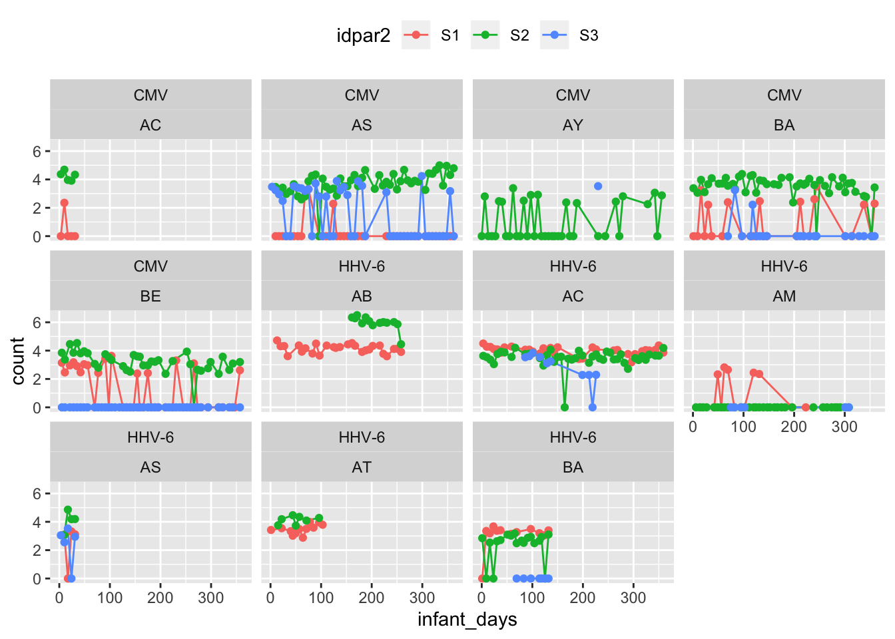
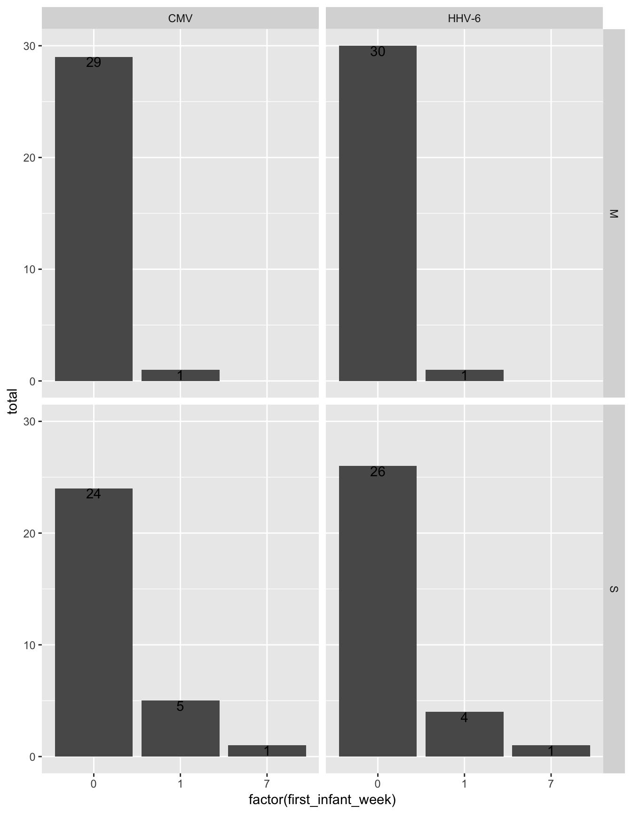
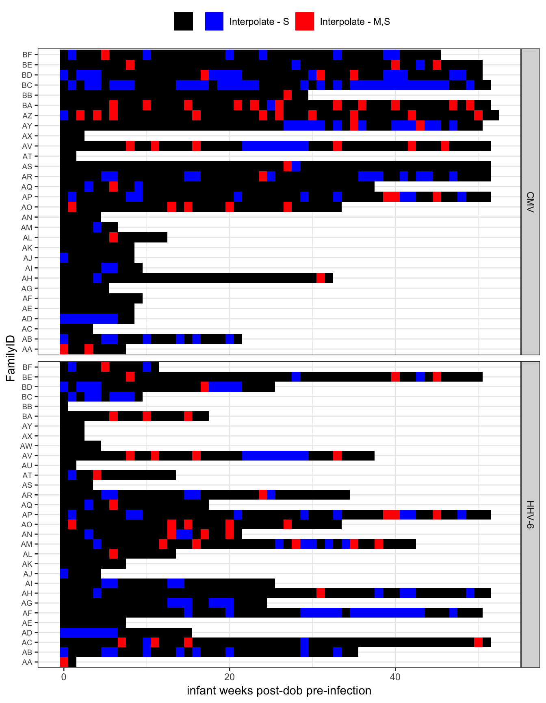

Last updated: 2020-01-23
Checks: 6 1
Knit directory: HHVtransmission/
This reproducible R Markdown analysis was created with workflowr (version 1.4.0). The Checks tab describes the reproducibility checks that were applied when the results were created. The Past versions tab lists the development history.
The R Markdown file has unstaged changes. To know which version of the R Markdown file created these results, you’ll want to first commit it to the Git repo. If you’re still working on the analysis, you can ignore this warning. When you’re finished, you can run wflow_publish to commit the R Markdown file and build the HTML.
Great job! The global environment was empty. Objects defined in the global environment can affect the analysis in your R Markdown file in unknown ways. For reproduciblity it’s best to always run the code in an empty environment.
The command set.seed(20190318) was run prior to running the code in the R Markdown file. Setting a seed ensures that any results that rely on randomness, e.g. subsampling or permutations, are reproducible.
Great job! Recording the operating system, R version, and package versions is critical for reproducibility.
Nice! There were no cached chunks for this analysis, so you can be confident that you successfully produced the results during this run.
Great job! Using relative paths to the files within your workflowr project makes it easier to run your code on other machines.
Great! You are using Git for version control. Tracking code development and connecting the code version to the results is critical for reproducibility. The version displayed above was the version of the Git repository at the time these results were generated.
Note that you need to be careful to ensure that all relevant files for the analysis have been committed to Git prior to generating the results (you can use wflow_publish or wflow_git_commit). workflowr only checks the R Markdown file, but you know if there are other scripts or data files that it depends on. Below is the status of the Git repository when the results were generated:
Ignored files:
Ignored: .DS_Store
Ignored: .Rhistory
Ignored: .Rproj.user/
Ignored: analysis/.DS_Store
Ignored: analysis/.Rhistory
Ignored: data/.DS_Store
Ignored: docs/.DS_Store
Ignored: docs/figure/.DS_Store
Ignored: output/.DS_Store
Ignored: output/preprocess-model-data/.DS_Store
Untracked files:
Untracked: data/tmp/
Unstaged changes:
Modified: analysis/setup-exposure-data.Rmd
Modified: analysis/transmission-risk-sensitivity.Rmd
Note that any generated files, e.g. HTML, png, CSS, etc., are not included in this status report because it is ok for generated content to have uncommitted changes.
These are the previous versions of the R Markdown and HTML files. If you’ve configured a remote Git repository (see ?wflow_git_remote), click on the hyperlinks in the table below to view them.
| File | Version | Author | Date | Message |
|---|---|---|---|---|
| Rmd | af2a4c1 | Bryan | 2019-12-30 | all updates after co-author review; edits to tables/figs; ID75 |
| html | af2a4c1 | Bryan | 2019-12-30 | all updates after co-author review; edits to tables/figs; ID75 |
| html | ce0f229 | Bryan Mayer | 2019-07-09 | analysis through first-final draft |
| Rmd | 3bc1e7c | Bryan Mayer | 2019-07-04 | updated analysis through exposure overview |
| html | 3bc1e7c | Bryan Mayer | 2019-07-04 | updated analysis through exposure overview |
| html | 39e3dc0 | Bryan Mayer | 2019-06-07 | update through transmission risk |
| Rmd | c96d292 | Bryan Mayer | 2019-04-12 | updated through exposure assessment |
| html | c96d292 | Bryan Mayer | 2019-04-12 | updated through exposure assessment |
| html | 5af6494 | Bryan Mayer | 2019-03-21 | Build site. |
| Rmd | 05626ad | Bryan Mayer | 2019-03-21 | wflow_publish(c(“analysis/about.Rmd”, “analysis/index.Rmd”, |
This Rmarkdown script creates the exposure data for the dose-response analysis.
exposure_times = virusMeltedDataDemoAllInfant %>%
subset(idpar != "P" & !virus %in% c("HHV-8", "HSV", "EBV") &
!(FamilyID == "AZ" & virus == "HHV-6")
)
#merge later, relic from old code
age_data = select(exposure_times, FamilyID, enrollment_age) %>%
distinct()There are multiple secondary children (S) to aggregate.
multS_exposure = exposure_times %>%
subset(idpar == "S") %>%
group_by(FamilyID, virus) %>%
mutate(
idpar2 = str_split_fixed(PatientID, "-", n = 2)[,2],
total_SC = n_distinct(idpar2)
) %>%
subset(total_SC > 1) %>%
group_by(FamilyID, virus) %>%
mutate(
pvalue = kruskal.test(count ~ idpar2)$p.value
)
multS_exposure %>%
group_by(FamilyID, virus, idpar2, pvalue) %>%
summarize(
mean_VL = mean(count),
total = n(),
mean_n = stat_paste(mean_VL, total, digits = 2, trailing_zeros = F)
) %>%
select(FamilyID, virus, idpar2, mean_n, pvalue) %>%
ungroup() %>%
spread(idpar2, mean_n, fill = "---") %>%
mutate(flag = pvalue < 0.1) %>%
arrange(virus, pvalue, FamilyID) %>%
select(everything(), pvalue, flag) %>%
kable(digits = 3) %>%
kable_styling(full_width = F)| FamilyID | virus | pvalue | S1 | S2 | S3 | flag |
|---|---|---|---|---|---|---|
| AS | CMV | 0.000 | 0.2 (43) | 3.73 (48) | 1.48 (47) | TRUE |
| BE | CMV | 0.000 | 1.16 (40) | 3.19 (38) | 0 (44) | TRUE |
| BA | CMV | 0.000 | 0.9 (26) | 3.48 (47) | 0.26 (21) | TRUE |
| AC | CMV | 0.007 | 0.47 (5) | 4.25 (5) | — | TRUE |
| AY | CMV | 0.056 | — | 1.02 (37) | 3.53 (1) | TRUE |
| AB | CMV | 0.102 | 3 (16) | 7.75 (1) | — | FALSE |
| AM | CMV | 0.149 | 0 (4) | 1.16 (7) | — | FALSE |
| AT | CMV | 0.221 | 4.46 (2) | 3.19 (1) | — | FALSE |
| BB | CMV | 0.476 | 2.77 (24) | 2.74 (32) | — | FALSE |
| AC | HHV-6 | 0.000 | 4 (32) | 3.49 (45) | 2.77 (10) | TRUE |
| AB | HHV-6 | 0.000 | 4.15 (27) | 5.96 (13) | — | TRUE |
| BA | HHV-6 | 0.000 | 3.05 (13) | 2.35 (19) | 0 (7) | TRUE |
| AM | HHV-6 | 0.000 | 0.97 (13) | 0 (33) | 0 (6) | TRUE |
| AT | HHV-6 | 0.002 | 3.48 (12) | 4.12 (7) | — | TRUE |
| AS | HHV-6 | 0.078 | 2.38 (4) | 4.08 (4) | 2.42 (5) | TRUE |
| BB | HHV-6 | 0.221 | 6.04 (1) | 5.11 (2) | — | FALSE |
| BE | HHV-6 | 0.359 | 0.06 (40) | 0 (38) | 0 (44) | FALSE |
multS_exposure %>%
subset(pvalue < 0.1) %>%
ggplot(aes(x = infant_days, y = count, colour = idpar2)) +
geom_line() + geom_point() +
facet_wrap(~virus+FamilyID) +
theme(legend.position = "top")
| Version | Author | Date |
|---|---|---|
| af2a4c1 | Bryan | 2019-12-30 |
# combines siblings into one exposure
primary_exposures_idpar = exposure_times %>%
group_by(FamilyID, idpar, virus, infant_days, momhiv, days_from_final_infant, final_infant_day) %>%
summarize(
total_contributed_idpar = n(),
who_contributed_idpar = paste(str_split_fixed(PatientID, "-", n = 2)[,2], collapse = ", "),
exposure = log10(sum(10^count, na.rm = T)),
infected = infantInfection[1]
) %>%
group_by(FamilyID, virus, idpar) %>%
mutate(
unique_id = paste(FamilyID, virus, idpar, sep = "-"),
min_time_from_end = min(days_from_final_infant),
exposure = if_else(exposure <= 1, 0, exposure)
)
with(primary_exposures_idpar, ftable(idpar, total_contributed_idpar)) total_contributed_idpar 1 2 3
idpar
M 1606 0 0
S 1057 110 158Here, we leave counts (exposures) at times relative to infant birth, and create the outcome variable describing infant infection status in the following week.
The outcome variable is defined so that the infectious exposure occured 4-14 days prior to infected detection.
# make a new dataset organized by time before swab, use new days, this is for household
# create outcome variable
all_exposures_raw = primary_exposures_idpar %>%
rename(count = exposure) %>%
filter(days_from_final_infant > 0) %>% # these are either censored cases or infections (negative = post-infection)
group_by(FamilyID, idpar, virus) %>%
mutate(
final_exposure = days_from_final_infant == min(days_from_final_infant),
infectious_1wk = if_else(days_from_final_infant <= 14 & final_exposure & infected == 1, 1, 0)
)
testthat::expect_equal(min(subset(all_exposures_raw, infected == 0)$days_from_final_infant),
expected = 7,
info = "check if all uninfected measurements are at least a week from final measurement (ie, no infection one week later)")
testthat::expect_equal(min(subset(all_exposures_raw, infected == 1)$days_from_final_infant),
expected = 4,
info = "check if all infected measurements > 4")Plot checks that recoding was done right (no overlap on y-axis across steps)
wk_cuts = 0:ceiling(max(primary_exposures_idpar$infant_days)/7) * 7
wk_labels = head(wk_cuts, -1)/7
all_exposures_raw$infant_wks = cut(all_exposures_raw$infant_days, include.lowest = T, ordered_result = T,
breaks = wk_cuts, labels = wk_labels)
all_exposures_raw$final_infant_wk = as.numeric(as.character(cut(all_exposures_raw$final_infant_day,
include.lowest = T, ordered_result = T,
breaks = 0:100 * 7, labels = F))) - 1
testthat::expect_equal(min(all_exposures_raw$final_infant_wk) ,
expected = 0,
info = "check infant_wk rescale")
all_exposures_raw$infant_wks = as.numeric(as.character(all_exposures_raw$infant_wks))
ggplot(arrange(all_exposures_raw, infant_days), aes(y = infant_wks, x = infant_days)) +
geom_tile()
zoo:na.approx).map_df was used so that the data is summarized by a refactored infant_wk so complete can be used to find missing weeks for a giving exposure set (which varies by infant and exposure source). This could be done with group_by and nest.First plot displays extent of left censoring Second plot shows where intepolation occured.
all_exposures = map_df(unique(all_exposures_raw$unique_id), function(uid){
temp_data = subset(ungroup(all_exposures_raw), unique_id == uid) %>%
mutate(first_infant_week = min(infant_wks))
# refactor levels for complete()
temp_data$infant_wks = factor(temp_data$infant_wks,
levels = 0:max(temp_data$infant_wks))
out = temp_data %>%
group_by(FamilyID, unique_id, momhiv, virus, idpar,
infant_wks, first_infant_week, final_infant_wk) %>%
summarize(
count = max(count),
infected = unique(infected),
infectious_1wk = max(infectious_1wk),
final_exposure = max(final_exposure)
) %>%
ungroup() %>%
complete(infant_wks, nesting(FamilyID, momhiv, virus, idpar,
first_infant_week, final_infant_wk,
infected, unique_id)) %>%
arrange(infant_wks) %>%
mutate(
interpolate_idpar = if_else(is.na(count), unique(temp_data$idpar), ""),
infant_wks = as.numeric(as.character(infant_wks)),
infectious_1wk = na.fill(infectious_1wk, 0),
final_exposure = na.fill(final_exposure, 0),
count = na.approx(count, rule = 2)
)
if(nrow(temp_data) == 1) return(out)
testthat::expect_equal(n_distinct(diff(out$infant_wks)), expected = 1,
info=paste("Check infant_wks interpolation worked (common interval)",
unique(out$unique_id)))
testthat::expect_equal(unique(diff(out$infant_wks)), expected = 1,
info=paste("Check infant_wks interpolation worked (interval = one)",
unique(out$unique_id)))
if(any(out$interpolate_idpar != "")){
testthat::expect_equal(unique(out$infectious_1wk[out$interpolate_idpar != ""]),
expected = 0,
info=paste("Check infectious_1wk interpolation",
unique(out$unique_id)))
testthat::expect_equal(unique(out$final_exposure[out$interpolate_idpar != ""]),
expected = 0,
info=paste("Check infectious_1wk interpolation",
unique(out$unique_id)))
}
out
}) %>%
mutate(
count = if_else(count >= lower_limit - 1, count, 0) # the 1 is a small tolerance factor
)
testthat::expect_equal(all_exposures %>% group_by(unique_id) %>%
summarize(test = sum(infectious_1wk), test2 = sum(final_exposure)) %>%
filter(test > 1 | test2 > 1) %>% nrow(), expected = 0,
info = "Verifying infectious_1wk and final_exposure after interpolation")
all_exposures %>%
select(FamilyID, virus, idpar, first_infant_week) %>%
distinct() %>%
group_by(virus, first_infant_week, idpar) %>%
summarize(total = n()) %>%
ggplot(aes(x = factor(first_infant_week), y = total)) +
geom_histogram(stat = "identity") +
geom_text(aes(label = total), vjust = 1) +
facet_grid(idpar~virus)Warning: Ignoring unknown parameters: binwidth, bins, pad
all_exposures %>%
group_by(FamilyID, infant_wks, virus) %>%
summarize(
interpolate = str_c(interpolate_idpar, collapse = "")
) %>%
arrange(FamilyID, virus) %>%
ggplot(aes(y = infant_wks, x = FamilyID, fill = factor(interpolate))) +
geom_tile() +
scale_fill_manual("", values = c("black", "red", "blue", "gray"),
breaks = c("", "S", "MS", "M"),
labels = c("", "Interpolate - S",
"Interpolate - M,S", "interpolate - M")) +
coord_flip() +
labs(y = "infant weeks post-dob pre-infection") +
theme_bw() +
theme(legend.position = "top", axis.text.y = element_text(size = 7)) +
facet_wrap(~virus, nrow = 2, strip.position = "right", scales = "free_y")
all_exposures_wide = all_exposures %>%
group_by(FamilyID, virus, infant_wks) %>%
mutate(
interpolate_idpar = str_trim(str_c(sort(unique(interpolate_idpar)), collapse = " "))
) %>%
ungroup() %>%
reshape2::dcast(FamilyID + virus + infant_wks + infectious_1wk + final_infant_wk +
infected + momhiv + final_exposure + interpolate_idpar ~ idpar,
data = ., value.var = "count") %>%
mutate(
HH = log10(10^M + 10^S),
HH = if_else(HH <= lower_limit, 0, HH)
) %>%
ungroup()
exposure_data = all_exposures_wide %>%
filter(!is.na(S) & !is.na(M)) %>%
group_by(FamilyID, virus) %>%
mutate(
obs_infected = infected * max(infectious_1wk),
final_wk = max(infant_wks),
outcome_time = ifelse(obs_infected, final_infant_wk, final_wk + 1)
) %>%
ungroup() %>%
left_join(age_data, by = "FamilyID")
# extra step because empty string patterns are not supported
tmp_chr = "-"
exposure_data_long = exposure_data %>%
gather(idpar, count, S, M, HH) %>%
mutate(
interpolate_idpar_tmp = if_else(interpolate_idpar == "", tmp_chr, interpolate_idpar),
interpolated = if_else(interpolate_idpar != "" & idpar == "HH", T,
str_detect(interpolate_idpar_tmp, idpar))
) %>%
select(-interpolate_idpar_tmp)
testthat::expect_equal(exposure_data %>% group_by(FamilyID, virus) %>%
summarize(test = sum(infectious_1wk), test2 = sum(final_exposure)) %>%
filter(test > 1 | test2 > 1) %>% nrow(), expected = 0,
info = "Verifying final exposure has at most one infectious dose per infant")
testthat::expect_equal(exposure_data_long %>% group_by(FamilyID, idpar, virus) %>%
summarize(test = sum(infectious_1wk), test2 = sum(final_exposure)) %>%
filter(test > 1 | test2 > 1) %>% nrow(), expected = 0,
info = "Verifying final exposure has at most one infectious dose per infant")
# save the data
if(save_data) {
write_csv(exposure_data, "data/exposure_data.csv")
write_csv(exposure_data_long, "data/exposure_data_long.csv")
}
sessionInfo()R version 3.6.1 (2019-07-05)
Platform: x86_64-apple-darwin15.6.0 (64-bit)
Running under: macOS Catalina 10.15.2
Matrix products: default
BLAS: /Library/Frameworks/R.framework/Versions/3.6/Resources/lib/libRblas.0.dylib
LAPACK: /Library/Frameworks/R.framework/Versions/3.6/Resources/lib/libRlapack.dylib
locale:
[1] en_US.UTF-8/en_US.UTF-8/en_US.UTF-8/C/en_US.UTF-8/en_US.UTF-8
attached base packages:
[1] stats graphics grDevices utils datasets methods base
other attached packages:
[1] kableExtra_1.1.0 forcats_0.4.0 stringr_1.4.0 dplyr_0.8.3
[5] purrr_0.3.3 readr_1.3.1 tidyr_1.0.0 tibble_2.1.3
[9] ggplot2_3.2.1 tidyverse_1.2.1 zoo_1.8-6
loaded via a namespace (and not attached):
[1] tidyselect_0.2.5 xfun_0.10 reshape2_1.4.3
[4] haven_2.1.1 lattice_0.20-38 testthat_2.3.0
[7] colorspace_1.4-1 vctrs_0.2.0 generics_0.0.2
[10] viridisLite_0.3.0 htmltools_0.4.0 yaml_2.2.0
[13] rlang_0.4.2 pillar_1.4.2 glue_1.3.1
[16] withr_2.1.2 modelr_0.1.5 readxl_1.3.1
[19] plyr_1.8.4 lifecycle_0.1.0 munsell_0.5.0
[22] gtable_0.3.0 workflowr_1.4.0 cellranger_1.1.0
[25] rvest_0.3.5 evaluate_0.14 labeling_0.3
[28] knitr_1.25 highr_0.8 broom_0.5.2
[31] Rcpp_1.0.3 backports_1.1.5 scales_1.1.0
[34] webshot_0.5.1 jsonlite_1.6 farver_2.0.1
[37] fs_1.3.1 hms_0.5.1 digest_0.6.23
[40] stringi_1.4.3 grid_3.6.1 rprojroot_1.3-2
[43] cli_1.1.0 tools_3.6.1 magrittr_1.5
[46] lazyeval_0.2.2 crayon_1.3.4 whisker_0.4
[49] pkgconfig_2.0.3 zeallot_0.1.0 ellipsis_0.3.0
[52] xml2_1.2.2 lubridate_1.7.4 assertthat_0.2.1
[55] rmarkdown_1.17 httr_1.4.1 rstudioapi_0.10
[58] R6_2.4.1 nlme_3.1-142 git2r_0.26.1
[61] compiler_3.6.1